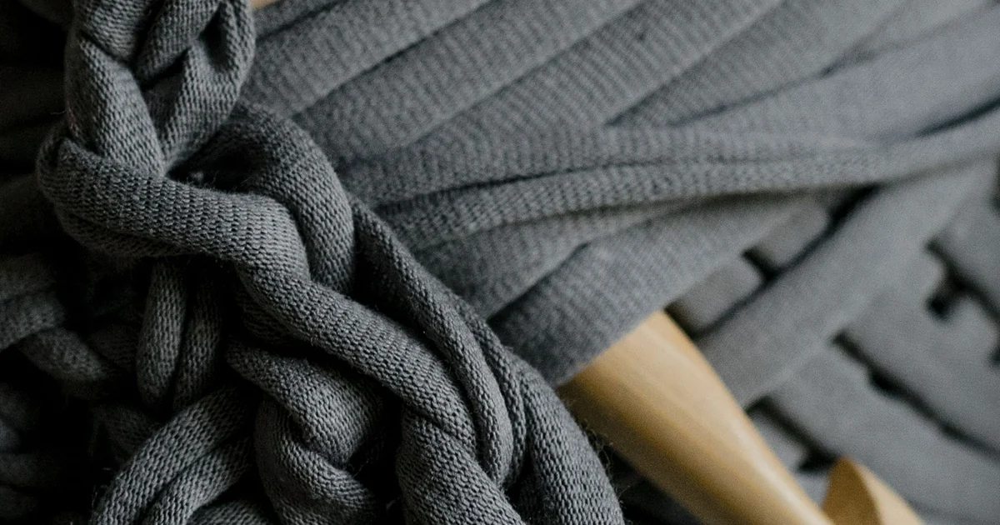
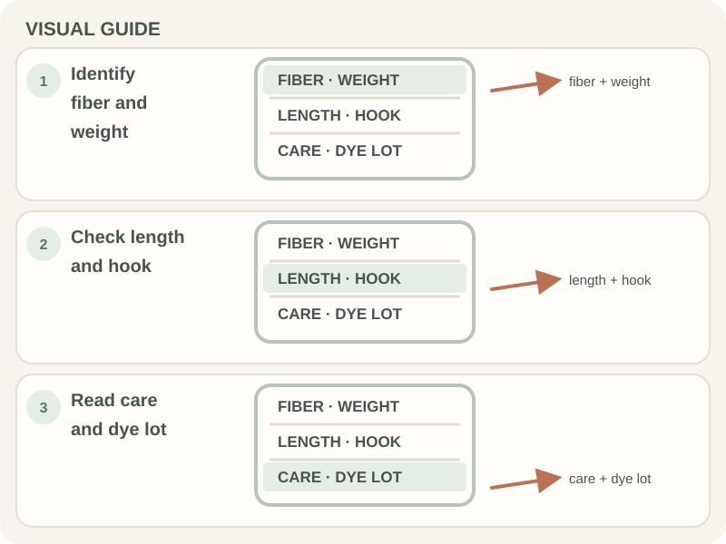

Tools, Yarn & Materials · Beginner guide
How to Read a Yarn Label for Crochet
Use a yarn label to compare weight, fiber, yardage, care, and suggested hook before starting a pattern.

A label helps you decide whether a yarn is a reasonable match, but the pattern and your gauge still matter when substituting.
Before you begin
Keep the label or photograph it before winding the skein. Dye-lot and care details may be hard to recover later.
Step-by-step instructions
- Find the yarn category and fiber content; these describe thickness and material, not the finished fabric by themselves.
- Compare the label’s yardage with the pattern’s total requirement. Buy enough from one dye lot when matching matters.
- Read care instructions before choosing yarn for a frequently washed item.
- Use the suggested hook as a starting point, then swatch for pattern gauge and texture.

What to check
Save information you may need later
Keep label details with leftover yarn. A dye-lot number can help when matching extra skeins, since colors may vary between lots.
The Craft Yarn Council standards explain the symbols and information commonly used on yarn labels.
Frequently asked questions
Is the suggested hook the pattern hook?
Not necessarily. It is a general starting point; a pattern may specify another hook to achieve gauge.
Where is yardage listed?
Look for length in yards or meters, usually near skein weight. Use length when comparing with pattern requirements.
Find the key details on a yarn label
For reading a yarn label, use this as the starting rule: locate fiber content, care symbols, weight category, suggested hook range, and put-up information. The label gives useful starting details, while the pattern determines which weight, gauge, and yardage matter for this project. Read the relevant instructions before beginning and keep them nearby as you work. If a general tutorial and the pattern give different directions, follow the pattern’s stated convention; another project may use a different method.
Read fiber content and care symbols
Before proceeding, confirm which details the pattern relies on and which are only starting guidance. Write any project-specific choice in your notes so you can apply it consistently. If the pattern or label leaves the detail unclear, look for its own key or maker guidance rather than assuming that another project follows the same convention. This short check can prevent a small misunderstanding from affecting the rest of the work.
Compare weight and hook guidance
A practical way to apply reading a yarn label: Compare the pattern’s recommendation with the label or sample you plan to use, then keep a band from the same dye lot and compare it with the pattern notes. Keep the yarn, hook, gauge, and yardage notes together so you can explain why you chose that material. The label gives a starting point; the pattern’s gauge and the actual fabric help you decide whether the choice suits this project.
Check put-up and yardage information
A common mistake in reading a yarn label is treating suggested hook size as a required size for every project. Watch for this sign: a replacement yarn differs in care, texture, or gauge. That can make the yarn choice or the amount purchased unsuitable for the pattern. Compare the recent work with the pattern and locate the first point where they differ. Correct that detail before continuing; stretching the fabric or adding an unplanned step can hide the cause without fixing it.
Keep dye-lot information with the project
If a replacement yarn differs in care, texture, or gauge, first check which details the pattern relies on and which are only starting guidance. Then compare the fiber, hook size, gauge, and yardage details that changed with what you actually have. Change one thing at a time so you can tell whether it addresses the problem. If the instructions and materials match but the result still differs, use the project’s gauge, sizing, substitution, or care notes as relevant; those are more useful than a universal fix.
Use label guidance with the pattern
Remember: the label helps compare yarns but does not replace pattern instructions. A substitution can change the fabric or the amount of yarn needed, even when the label category looks similar. If you choose an alternative, record it and compare a small sample or written step before applying the change across the project.
Save the information you may need later
To make reading a yarn label easier to repeat, use this sequence: keep a band from the same dye lot and compare it with the pattern notes, inspect the result, and only then continue. At first, slow down at the point where the pattern changes direction, begins a new round, or starts a repeat. A removable marker or brief row note can hold your place while you learn the construction. Once the sequence is clear, you can work more steadily without guessing which loop or instruction comes next.
Conclusion: Reading a yarn label
Keep this lesson in mind: the label helps compare yarns but does not replace pattern instructions. Keep the label and pattern notes together when choosing or replacing yarn. Keep the yarn label or a photo of it with the project. Fiber content, care symbols, and dye-lot information can matter later.